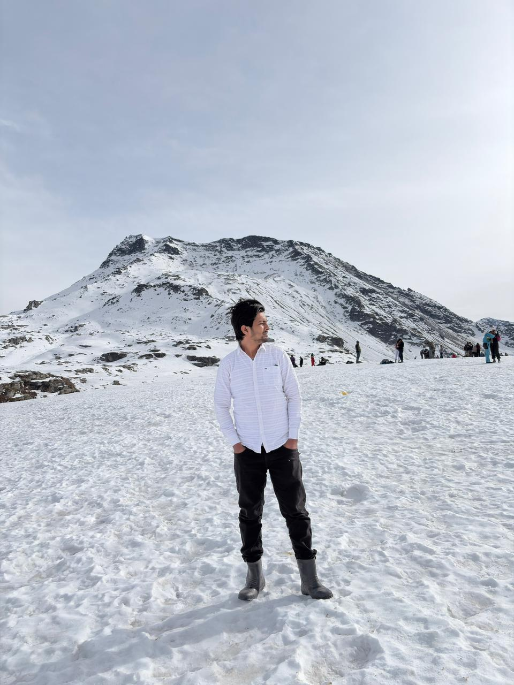

Crafting crisp
frontend experiences.
Hi, I'm Mustafa Shaikh. A passionate frontend developer blending logic with minimal, breathing designs.

Beyond the Code
I'm currently a 2nd-year B.Tech CS student at VIT Mumbai (Sem 4). My journey in tech is driven by an obsession with seamless user interfaces and robust performance.
When I’m not debugging a tricky component, you'll find me trekking in the mountains, gaming, or exploring new realms of digital design. I believe software should feel as expansive and refreshing as stepping onto a snowy peak—sharp, clean, and professional.
Coding
The Journey
Frontend Developer
NGO Android Application
Leading the UI/UX architecture and frontend implementation for an Android application focused on modernizing non-profit workflows. Delivering accessible, clean, and highly responsive digital interfaces.
Competitor & Innovator
Smart India Hackathon (Sem 3)
Engineered high-performance web components under intense time constraints. Collaborated in a fast-paced environment to build problem-solving tech solutions at the national level.
Latest Works
Interactive Analytics Dashboard
A complex, data-heavy frontend application consuming real-time streams to render dynamic financial charts. Built with advanced state management to handle thousands of rapidly updating data points seamlessly.
Real-time Collaborative Canvas
A highly interactive digital whiteboard tool demonstrating complex event handling, drawing mechanics, and real-time syncing across multiple clients without perceived latency.
E-Learning Portal Interface
A feature-rich educational platform frontend integrating a custom video player interface, seamless rich-text note taking, and dynamic progress trackers with sophisticated fluid animations.